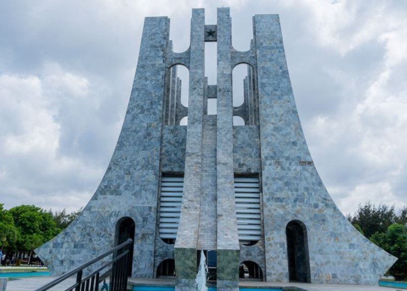
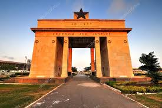
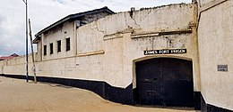
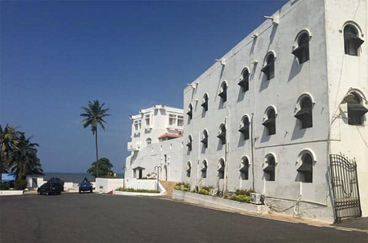
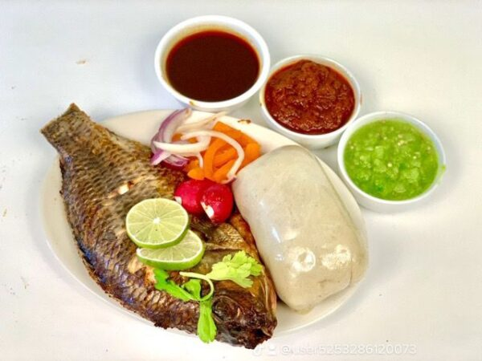

Accra, la capitale animée du Ghana, regorge de places emblématiques qui reflètent son histoire, sa culture et son dynamisme.Parmi ces sites incontournables figurent la place de l'Indépendance, un symbole de la lutte pour l'indépendance du Ghana, où se dresse fièrement le monument de l'Indépendance. Cette vaste esplanade accueille souvent des événements nationaux et des célébrations.Ces places emblématiques d'Accra offrent aux visiteurs un aperçu fascinant de l'histoire, de la culture et de la vie contemporaine de cette ville dynamique et en constante évolution
Places emblématiques

Kwame Nkrumah Mausoleum
Le mausolée Kwame Nkrumah à Accra, Ghana, honore le premier président du pays et figure de l'indépendance africaine. Inauguré en 1992, il abrite ses restes et célèbre son héritage politique. Le monument de style moderniste arbore des éléments architecturaux symboliques représentant l'unité et la liberté. Une statue imposante de Nkrumah accueille les visiteurs à l'entrée. Les expositions intérieures retracent sa vie et son rôle dans la lutte pour l'indépendance du Ghana.Construit près de vingt ans après la mort de Nkrumah, il est considéré comme l'un des monuments les plus importants du Ghana. La statue de Nkrumah a été sculptée par l'artiste ghanéen Kofi Antubam. Il sert également de lieu de commémoration pour les événements liés à l'indépendance du Ghana. En somme, le mausolée Kwame Nkrumah est un monument emblématique rendant hommage à un leader visionnaire et à son impact sur l'histoire de l'Afrique.

Independence Arch
L'Independence Arch, situé au cœur de la ville d'Accra, est un monument majestueux qui incarne l'esprit de l'indépendance et de la fierté nationale du Ghana. Conçu par le célèbre architecte ghanéen Theo Acheampong, il se compose d'un arc élégant surmonté d'une flamme éternelle, symbolisant la lutte pour la liberté et la persévérance du peuple ghanéen. Au fil des décennies, l'Independence Arch est devenu bien plus qu'un simple monument commémoratif ; c'est un lieu de rassemblement où les citoyens se réunissent pour célébrer leur histoire, leur culture et leur identité nationale. Entouré de jardins verdoyants et d'une atmosphère vibrante, il attire les visiteurs du monde entier, offrant un témoignage poignant de l'histoire et de la résilience du Ghana.

Fort James
Le Fort James, également connu sous le nom de Fort Saint-Jacques, est une forteresse historique située à Accra, au Ghana. Construit au 17ème siècle par les Portugais, puis reconstruit par les Britanniques au 17ème siècle, il a joué un rôle crucial dans le commerce des esclaves transatlantiques. Le fort a été utilisé comme poste de traite des esclaves, où les captifs africains étaient détenus avant d'être expédiés vers les Amériques. Aujourd'hui, le Fort James est devenu un site historique majeur, offrant aux visiteurs un aperçu sombre mais important de l'histoire de l'esclavage et du colonialisme dans la région. Les visiteurs peuvent explorer ses ruines imposantes, en apprendre davantage sur son histoire tumultueuse et réfléchir aux horreurs du passé tout en honorant la mémoire des victimes de l'esclavage.

Osu Castle
Le Osu Castle, également connu sous le nom de Fort Christiansborg, est un bâtiment historique emblématique situé à Accra, au Ghana. Construit par les Danois au 17ème siècle, il a été utilisé à des fins diverses au fil des ans, notamment comme fort militaire, résidence présidentielle et siège du gouvernement ghanéen. Pendant la période coloniale, il a été le siège du gouvernement colonial britannique, et après l'indépendance en 1957, il est devenu la résidence présidentielle. Aujourd'hui, bien que le bâtiment ne soit plus utilisé comme résidence présidentielle, il conserve une importance symbolique en tant que lieu historique et politique majeur au Ghana. Le Osu Castle est souvent visité par les touristes et les dignitaires étrangers intéressés par son riche passé et son rôle dans l'histoire du pays.
Plats locaux
Jollof Rice
Le Jollof rice à Accra est une version particulièrement appréciée de ce plat emblématique de l'Afrique de l'Ouest. À Accra, la recette traditionnelle de Jollof rice est souvent préparée avec du riz parfumé, des tomates bien mûres, des oignons, des poivrons et un mélange d'épices locales qui donnent au plat son goût distinctif. On peut également y ajouter du poulet, du poisson, des crevettes ou d'autres protéines selon les préférences. Ce plat est généralement servi lors de grandes occasions, fêtes et rassemblements familiaux à Accra, où il est apprécié pour sa saveur riche et épicée. Chaque cuisinier peut apporter sa propre touche personnelle à la recette, ce qui fait du Jollof rice à Accra une expérience culinaire unique et délicieuse.
Banku avec Tilapia
Le "Banku avec tilapia" est un plat classique au Ghana, très apprécié pour sa saveur délicieuse et sa texture unique. Le banku est similaire au kenkey ou banks mentionné précédemment, étant une bouillie de maïs fermentée. Il est préparé en mélangeant de la farine de maïs avec de l'eau et en laissant fermenter pendant quelques jours, puis en le cuisant à la vapeur. Le tilapia, un poisson très courant dans les eaux ghanéennes, est généralement grillé ou frit et servi avec le banku. Le poisson est souvent assaisonné avec des épices locales pour lui donner une saveur encore plus délicieuse. Le banku avec tilapia est souvent accompagné d'une sauce épicée appelée "shito" et parfois de légumes verts cuits à la vapeur. Ce plat est un favori au Ghana, apprécié pour son goût savoureux et son côté réconfortant. Il est souvent servi lors de rassemblements familiaux, d'occasions spéciales et dans les restaurants locaux à travers le pays.

Kelewele
Le Kelewele est une spécialité de Accra incontournable ! Il est préparé en coupant des bananes plantains bien mûres en morceaux et en les marinant dans un mélange d'épices savoureuses comme le gingembre, le piment, le poivre et le sel. Ensuite, les morceaux de banane plantain sont frits jusqu'à ce qu'ils soient croustillants à l'extérieur et tendres à l'intérieur. Le résultat est une explosion de saveurs avec une combinaison épicée et légèrement sucrée. Que vous soyez un amateur de cuisine épicée ou simplement curieux de découvrir de nouvelles saveurs, le Kelewele est un régal à ne pas manquer lors de votre visite à Accra. Assurez-vous de le déguster bien chaud et accompagné d'une boisson rafraîchissante pour une expérience gustative complète.